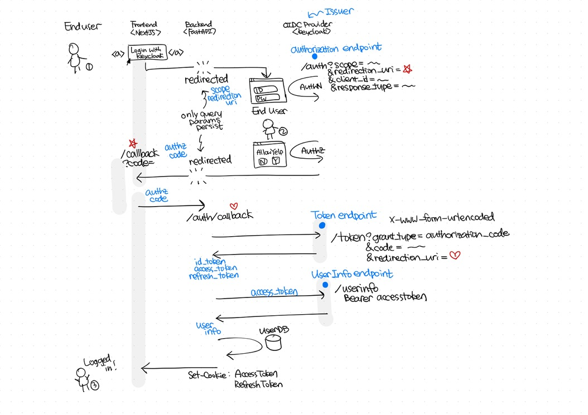
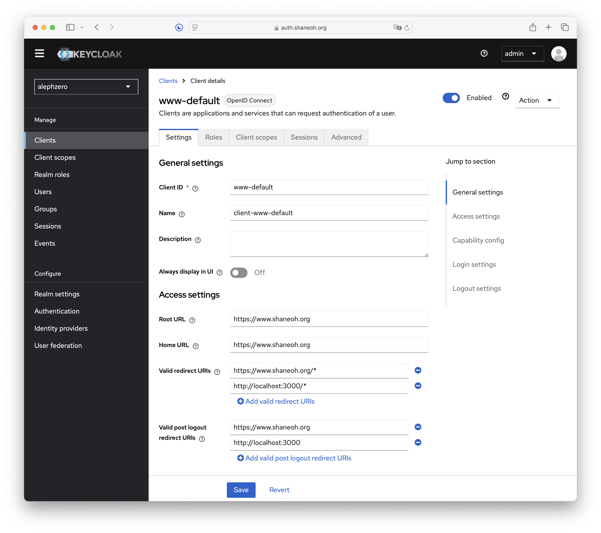

OpenID Connect
Difference Between OAuth2.0 and More!
This document is based on the OpenID Connect Core specification. Additionally, the video by Okta elucidates the core idea of the whole concept with a simple diagram. Great explaination Nate!
Before we begin, let’s talk about auth first.
Overview
OpenID Connect 1.0 is a simple identity layer on top of the OAuth 2.0 protocol. It enables Clients to verify the identity of the End-User based on the authentication performed by an Authorization Server, as well as to obtain basic profile information about the End-User in an interoperable and REST-like manner.
Section 1.3. explains the steps that the OpenID Connect (OIDC) protocol follows from a bird’s-eye view.

There are three actors in this diagram.
- End-User: The person who clicks, types, user credentials to get logged in.
- RP (Relying Party): The application that wants to verify the identity of the End-User and obtain information about the End-User.
- OP (OpenID Provider): The server that authenticates the End-User and provides the identity information to the RP.
Prerequisites
Let’s take an example with Keycloak to understand the steps involved in the OpenID Connect flow. In this example, Keycloak is acting as an OP.
In Keycloak, a realm is a space where you manage objects such as users, applications, and roles. Each realm is isolated from other realms and can have its own configuration and settings.
Go to the dropdown menu in the upper left menu and select the realm you want to configure. Then, follow these steps:
- Create realm: This requires a name which will be used as a
REALM_NAMElater on. - Manage > Clients > Clients list > Create client: This creates an RP with a distinctive name
CLIENT_ID.

Flow
Authentication Request
The first request is made by the client application when the Login with Keycloak button is clicked. This redirects the the browser’s page to the Keycloak’s auth page.
<button
onClick={() => (
window.location.href = `https://${HOST}/auth/realms/${REALM_NAME}/protocol/openid-connect/auth`
+ `?client_id=${CLIENT_ID}`
1 + `&redirect_uri=${REDIRECT_URI}`
2 + `&response_type=${RESPONSE_TYPE}`
3 + `&scope=${SCOPE}`
)}
>
Login with Keycloak
</button>- 1
-
The RP’s callback url.
https://www.shaneoh.org/callbackin this case. - 2
-
Either
codeortoken. - 3
-
Usually
openid,openid email,openid email profilewill do.
Notice that there is no fetch request in this button. Instead, it simply redirects the page.
The RP does not make a direct API request to the OP. Instead, it redirects the user’s browser to the OP’s authentication page. Since this is a browser-driven interaction, the only way to pass information is through URL parameters.
After the end-user’s username:password input is finished and the login button (of Keycloak’s) is pressed, this is when the first API request is invoked.
The click of a login button will invoke the authentication request, and Keycloak will validate the user’s credentials. If successful, Keycloak will redirect the user back to the specified redirect_uri with a query parameter containing an authorization code or an authorization token. This can be chosen with the RESPONSE_TYPE parameter by setting code or token.
For security reasons, the Authorization Code Flow (RESPONSE_TYPE=code) is preferred, as it minimizes the risk of exposing sensitive information through query parameters.
Sometimes there are some cases when only client service (React etc.) exists. In theses cases the impliclit flow is used by retrieving access token right away.
Token Request
Once the client application receives the authorization code, it needs to exchange this code for an access token. This is done by making a POST request to the Keycloak token endpoint.
grant_type: This should be set toauthorization_code.code: The authorization code received from the previous step.redirect_uri: The same redirect URI used in the authentication request.client_id: The client ID of the application.client_secret: The client secret, if client authentication is required.
The request should be made with the Content-Type header set to application/x-www-form-urlencoded.
Here is an example of how to make this request using JavaScript:
const tokenRequest = async (authCode) => {
const response = await fetch(`https://${HOST}/auth/realms/${REALM_NAME}/protocol/openid-connect/token`, {
method: 'POST',
headers: {
'Content-Type': 'application/x-www-form-urlencoded'
},
body: new URLSearchParams({
grant_type: 'authorization_code',
code: authCode,
redirect_uri: REDIRECT_URI,
client_id: CLIENT_ID,
client_secret: CLIENT_SECRET
})
});
if (!response.ok) {
throw new Error('Token request failed');
}
const tokenData = await response.json();
return tokenData;
};UserInfo Request
After obtaining the access token, the client application can use it to request user information from the Keycloak UserInfo endpoint. This endpoint returns claims about the authenticated user.
Here is an example of how to make this request using JavaScript:
const userInfoRequest = async (accessToken) => {
const response = await fetch(`https://${HOST}/auth/realms/${REALM_NAME}/protocol/openid-connect/userinfo`, {
method: 'GET',
headers: {
'Authorization': `Bearer ${accessToken}`
}
});
if (!response.ok) {
throw new Error('UserInfo request failed');
}
const userInfo = await response.json();
return userInfo;
};